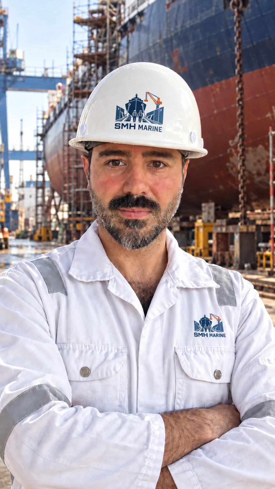
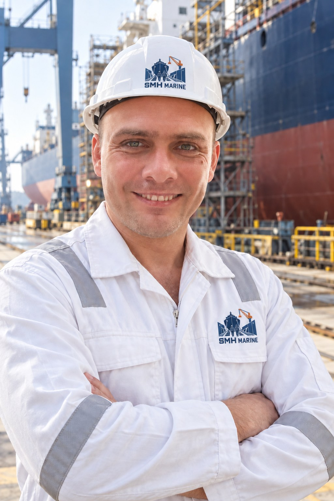

Shanghai
Yangtze Delta attendance for owner representation, repair, inspection and newbuilding follow-up.
Headquartered in China · Global marine technical services
Headquartered in China, SMH Marine protects the owner's technical and commercial interests throughout shipyard projects—controlling scope, cost and delivery from major repairs to newbuilding support.
China-based delivery
Headquartered in China, SMH Marine combines direct access to major Chinese shipyards with owner-side engineering control and international project standards.
Our China-based team of more than 20 experienced specialists combines deep knowledge of Chinese shipyards with owner-side technical and commercial oversight.
Shanghai · Dalian · Nantong · Zhoushan · Tianjin
Five strategic shipyard regions
Yangtze Delta attendance for owner representation, repair, inspection and newbuilding follow-up.
Northeast China mobilization for repair and newbuilding project coordination.
Yangtze River shipyard attendance, repair planning and project follow-up.
Repair, dry-docking and pre-docking coordination across the local yard network.
North China technical attendance and shipyard coordination.
Emergency repairs in China
From fault finding to repair coordination and testing, the China-based team organizes the required technical response in port, at anchorage or in the shipyard.
Owner-side advantage
We scrutinize shipyard quotations, negotiate scope and pricing, control variations and extra work, verify progress and invoices, and challenge avoidable cost. The objective is clear: protect the owner's technical and commercial position without compromising safety, quality or delivery.
Commercial control examples
Duplicate, unclear, out-of-scope or commercially weak items are challenged before commitment.
Extra work is checked against the agreed scope and supported by written approval and technical evidence.
Payment assessment is aligned with verified quantities, progress and accepted completion.
Schedule, quality and close-out controls reduce avoidable delay and downstream cost.
Leadership
Two co-founders, one integrated service: Evrim leads Türkiye and Europe operations, while Adem leads China and Asia operations.

Co-Founder · Türkiye & Europe Operations
As Co-Founder responsible for Türkiye and Europe, Evrim leads shipyard repair projects, ship repair brokerage and owner-side technical consultancy.
With an academic background in Marine Engineering and Naval Architecture, he spent a decade delivering repair and technical-service projects for LPG and chemical tankers at one of Türkiye's leading maritime companies. He has since managed international maintenance and repair projects for LPG, chemical and product tankers as well as dry bulk vessels.
Regional responsibility: Türkiye & Europe · Focus: technical project management, risk control and repair efficiency.

Co-Founder · China & Asia Operations
An Istanbul Technical University Marine Engineering Operations graduate with seagoing experience as a Chief Engineer.
Responsible for China and Asia operations, he has spent the past 15 years delivering repair and newbuilding work in Chinese shipyards, coordinating more than 200 projects and connecting shipowner requirements with local capabilities.
Regional responsibility: China & Asia · Focus: shipyard strategy, technical coordination and owner representation.
SMH Marine
We support shipowners and managers with practical expertise from initial diagnosis to final delivery. Our work combines independent consultancy, shipyard coordination and hands-on engineering support.
One accountable technical partner—across ports, shipyards and sailing schedules.
Work scope
Specialist support for planned projects, urgent defects and heavy repair scopes.
Major main and auxiliary engine repairs, crankshaft works, dry-docking, steel renewal and heavy technical projects.
View scopeOwner-side representation, quotation and contract review, price negotiation, variation control, survey readiness and technical management.
View scopeEnergy-efficiency, ballast water treatment and exhaust gas cleaning system support.
View scope3D scanning, design, failure analysis and practical engineering solutions for vessels.
View scopeIntegrated retrofit projects to reduce fuel use and CO₂ emissions through shaft generators, LED conversion, propeller upgrades and stern-flow improvements.
View scopeDetailed capabilities
A coordinated technical scope for routine work, major repairs and time-critical attendance.
Specialist expertise
Focused service pages for technical managers preparing a repair, inspection, survey or newbuilding project.
Global service network
Service coordination, technical contacts and shipyard relationships across six operating regions.
Markers represent service coordination and partner-network coverage, not company offices.
How we work
Vessel condition, port, schedule and technical priorities are established.
The right engineers, repair team and shipyard resources are coordinated.
Progress, quality, safety and critical findings remain visible throughout the work.
Completion status and technical records are handed over clearly.
24/7 urgent technical attendance
SMH Marine coordinates time-critical attendance, troubleshooting and repair support across its service network.
Technical enquiry
For urgent attendance or a planned project, contact Evrim Biçer directly by phone, email, WhatsApp or WeChat. The China office details are provided below.